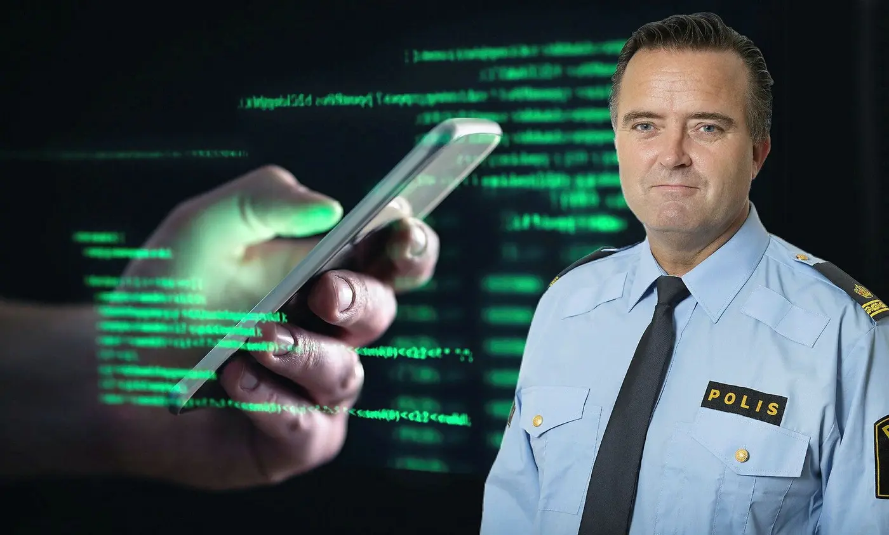
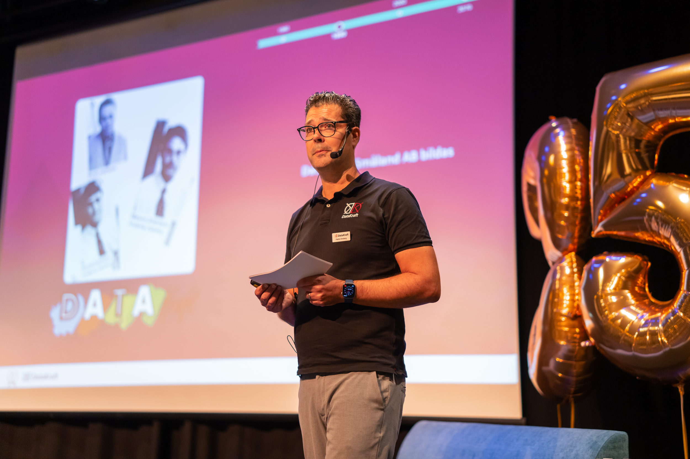
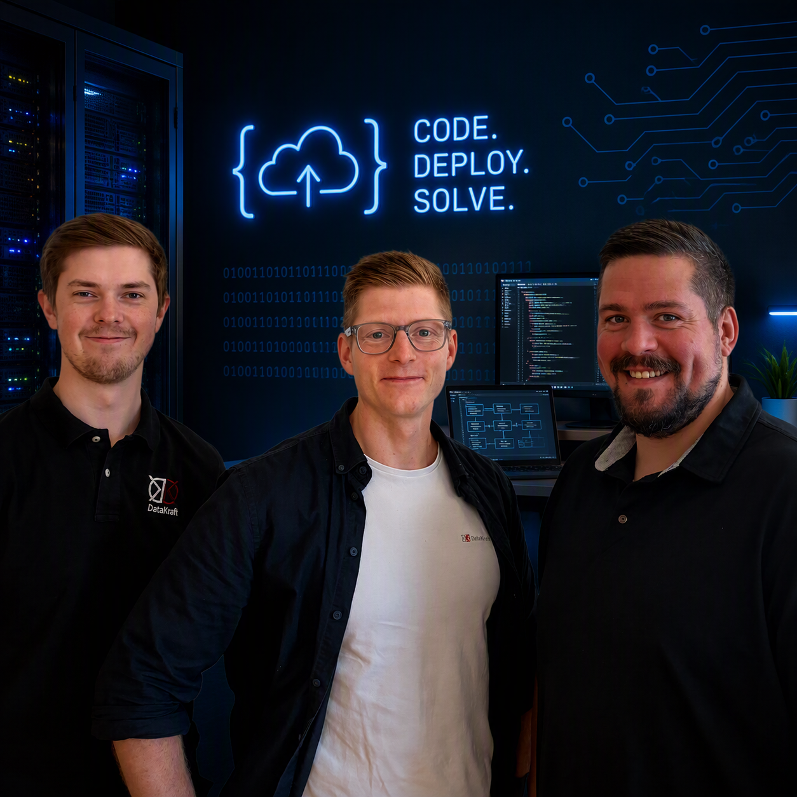

01
Inspirerande talare
Ta del av erfarenheter, insikter och berättelser från personer som verkar i teknikens och samhällets framkant.
September 2026 • High Chaparral
En inspirerande dag där affärssystem, integrationer och digitalisering möter verklig affärsnytta.

Säkerhet i en digital värld
Kriminalkommissarie, författare och säkerhetsprofil. En föreläsning om dagens hotbild, cybersäkerhet och hur organisationer kan stärka sitt säkerhetsarbete.
Om dagen
På DK-dagen samlar vi kunder, partners och experter för att utforska hur teknik kan skapa verkligt affärsvärde. Genom inspirerande föreläsningar, praktiska exempel och personliga möten får du nya perspektiv på digitalisering, affärssystem och framtidens arbetssätt.
Under dagen får du möjlighet att upptäcka nya lösningar, ställa frågor till våra specialister och utbyta erfarenheter med andra företag som står inför liknande utmaningar.
Vårt mål är enkelt: att du ska lämna DK-dagen med nya idéer, insikter och kontakter som kan hjälpa dig att driva din verksamhet framåt i en alltmer digitaliserad värld.
Höjdpunkter
Lyssna på inspirerande föreläsare, ta del av verkliga kundcase och träffa kollegor från hela Datakraft. DK-dagen är vår möjlighet att lära, dela erfarenheter och blicka framåt tillsammans.
Ta del av erfarenheter, insikter och berättelser från personer som verkar i teknikens och samhällets framkant.
Upptäck hur smarta lösningar, integrationer och digitalisering skapar värde för våra kunder varje dag.
Möt kollegor från hela företaget, utbyt idéer och stärk relationer över avdelningsgränserna.
Program
Agendan är preliminär och kan komma att uppdateras.
Vi startar dagen med registrering och incheckning.
Introduktion till dagen, temat och vad deltagarna kan förvänta sig.
Ta del av de senaste nyheterna, aktuella initiativen och utvecklingen inom våra produkter och tjänster. En snabb och inspirerande överblick över vad som händer nu och framöver.
Kaffe, nätverkande och möjlighet att prata vidare med medverkande.
Jan Olsson ger en unik inblick i dagens cyberhot och den snabbt föränderliga säkerhetsbilden. Med erfarenheter från verkliga fall delar han insikter som berör alla verksamheter i en digital värld.
Mat, nätverkande och möjlighet att fortsätta prata lösningar.
Följ med på resan från traditionell drift till en modern SaaS-lösning. Vi går igenom de viktigaste stegen, utmaningarna och framgångsfaktorerna i en lyckad migrering.
Kort paus med möjlighet att besöka montrar och prata med Datakraftare.
Upptäck hur Microsoft Copilot och SharePoint kan effektivisera arbetet, förbättra samarbetet och frigöra tid för mer värdeskapande uppgifter. Vi visar konkreta exempel från dagens digitala arbetsplats.
Vi rundar av dagen med reflektioner, priser och nästa steg.
Medverkande
Kriminalkommissarie, författare och säkerhetsprofil
Jan Olsson är en av Sveriges mest välkända experter inom cyberbrottslighet och digital säkerhet. Under föreläsningen delar han med sig av erfarenheter från verkliga fall, aktuella cyberhot och konkreta råd för hur företag kan stärka sitt digitala skydd. En tankeväckande och inspirerande presentation om säkerhet i en allt mer uppkopplad värld.

VD
Dagen inleds av vår VD Patrik Ahnberg som hälsar alla välkomna till DK-dagen. Patrik delar sina tankar kring företagets utveckling, digitaliseringens möjligheter och vikten av att fortsätta utvecklas tillsammans med kunder och samarbetspartners. En inspirerande start som sätter tonen för resten av dagen.
Steg för steg mot SaaS
Hur går det egentligen till när en verksamhet migreras till SaaS? Under denna presentation får du följa med genom hela resan, från planering och förberedelser till genomförande och uppföljning. Vi delar med oss av erfarenheter, utmaningar och viktiga framgångsfaktorer för en smidig övergång till framtidens plattform.
Nyheter & State of Play
Vad händer just nu och vad väntar runt hörnet? Under denna session får du en aktuell lägesbild av pågående initiativ, produktutveckling och viktiga nyheter. Ett perfekt tillfälle att fånga upp det senaste, förstå riktningen framåt och få en inblick i vad som väntar under den kommande perioden.

Sharepoint & Copilot
Hur kan AI och moderna samarbetsplattformar hjälpa organisationer att arbeta smartare? Under denna presentation visar vi hur Microsoft Copilot och SharePoint kan effektivisera arbetsflöden, förbättra informationshantering och frigöra tid för mer värdeskapande arbete. Med konkreta exempel får du en inblick i hur framtidens digitala arbetsplats redan är här.

Moderatorer
MODERATOR MODERATOR MODERATOR MODERATOR MODERATORM
Montrar
Besök våra montrar, träffa våra specialister och upptäck hur teknik, tjänster och smarta lösningar kan skapa värde i din verksamhet. Här får du möjlighet att ställa frågor, se lösningarna i praktiken och diskutera dina egna utmaningar med våra experter.
Vill du veta mer? Kontakta oss!Hur kan AI och moderna samarbetsverktyg förenkla arbetsdagen? I denna monter visar vi hur Microsoft Copilot och SharePoint kan hjälpa er att hitta information snabbare, automatisera repetitiva uppgifter och skapa en mer effektiv digital arbetsplats. Ta del av konkreta exempel, testa lösningarna själv och få praktiska tips för din verksamhet.
Hur säker är er IT-miljö idag? I denna monter visar vi hur ni kan minska risker, stärka säkerheten och samtidigt skapa en smidigare användarupplevelse. Lär er mer om DK Security Scan, DK Workplace och hur rätt arbetssätt, verktyg och säkerhetstjänster kan bidra till en trygg och modern digital arbetsplats.
Är er verksamhet förberedd om det värsta skulle inträffa? I denna monter visar vi hur moderna backup- och återställningslösningar skyddar verksamhetskritisk information mot både mänskliga misstag och cyberattacker. Ta del av hur DK Immutable Backup kan hjälpa er att säkerställa att data finns tillgänglig när den verkligen behövs.
Vad händer inom Microsoft-världen just nu? Träffa experter från Crayon och få insikter om Microsoft 365, Copilot, Azure och moderna molntjänster. Ta del av nyheter, trender och praktiska råd som hjälper er att arbeta smartare, säkrare och mer kostnadseffektivt.
Hur kan molntjänster skapa en mer flexibel och framtidssäker IT-miljö? I denna monter visar vi möjligheterna med moderna molnlösningar, från drift och säkerhet till skalbarhet och tillgänglighet. Få inspiration och konkreta exempel på hur verksamheter kan dra nytta av molnet.
Hur förvandlar man data till bättre beslut? I denna monter visar vi hur Business Intelligence kan hjälpa verksamheter att visualisera nyckeltal, följa upp resultat och upptäcka nya möjligheter. Se exempel på dashboards, rapporter och analysverktyg som skapar värde i vardagen.
Hur kan affärssystem skapa effektivare processer inom ekonomi och handel? I denna monter visar vi lösningar som förenklar allt från orderhantering och fakturering till uppföljning och analys. Upptäck funktioner som hjälper verksamheten att arbeta smartare och mer lönsamt.
Hur skapar man ett effektivt flöde från inköp till leverans? I denna monter visar vi lösningar för tillverkning, lagerstyrning och logistik som ger bättre kontroll över processer, resurser och leveranser. Ta del av exempel från verkligheten och se hur tekniken kan stödja verksamheten.
Hur får man systemen att arbeta tillsammans istället för var för sig? I denna monter visar vi hur integrationer kan automatisera informationsflöden, minska manuellt arbete och skapa effektivare processer. Se exempel på integrationer mellan affärssystem, e-handel, ekonomisystem och andra verksamhetskritiska lösningar.
Quiz och tävling
Delta i vårt mässquiz direkt i mobilen. Besök utställarna, samla svar och var med i tävlingen.
Kontakt
Hör av dig så hjälper vi dig vidare.
Säljare
Projektkoordinator